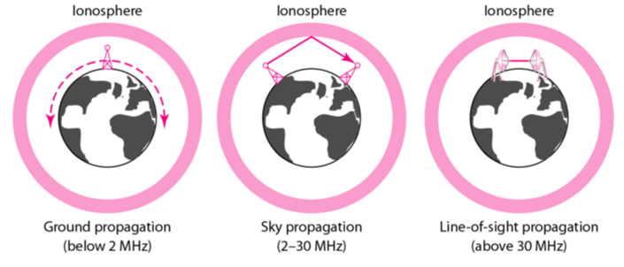

The purpose of the physical layer is to transport bits from one node to another.
Bits are transmitted as signals over a transmission media. There are many different types of medias that can be used.
There are two main types of transmission media:
I will cover 4 examples of guided media:
| Media | Description | Used in... | Data rate | Advantages | Disadvantages |
|---|---|---|---|---|---|
| Twisted pair cable |
|
|
4Mbps |
|
|
| Coaxial cable |
|
|
45Mbps |
|
|
| Power lines |
|
100Mbps |
|
|
|
| Fibre optic cables |
|
|
>= 100Mbps |
|
|
Computers and other telecommunication devices use signals to represent data.
These signals are transmitted from one device to another in the form of an electromagnetic wave, which is propagated through an unguided transmission media.
Unguided media transports those waves without using any physical conductors.
So essentially wireless communications!
Unguided signals are usually broadcast through the air and are thus available to anyone who has a device capable of capturing those signals.
Unguided signals can travel in 3 main ways:
Here's a diagram that visualises the differences between these 3 types of unguided signals:
I will cover 3 examples of unguided media:
| Media | Description | Used in... | frequency |
|---|---|---|---|
| Radio |
|
|
LF - VHF (3kHz - 1Ghz) |
| Microwave |
|
|
VHF - SHF (3GHz - 30GHz) |
| Microwave |
|
|
THF (300GHz - 3THz) |